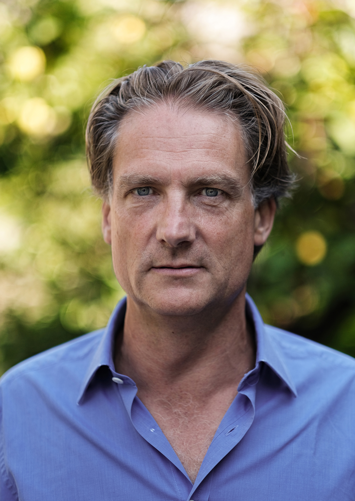
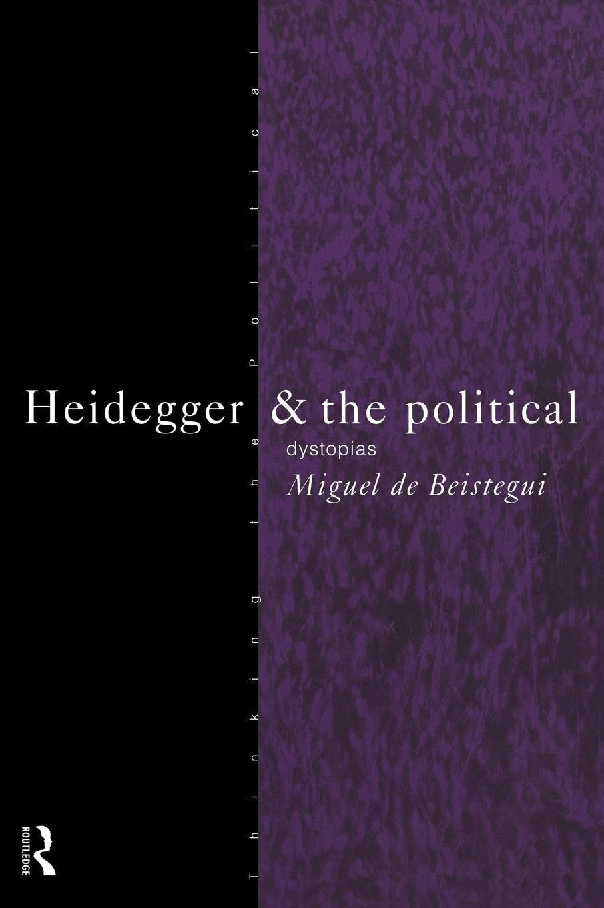
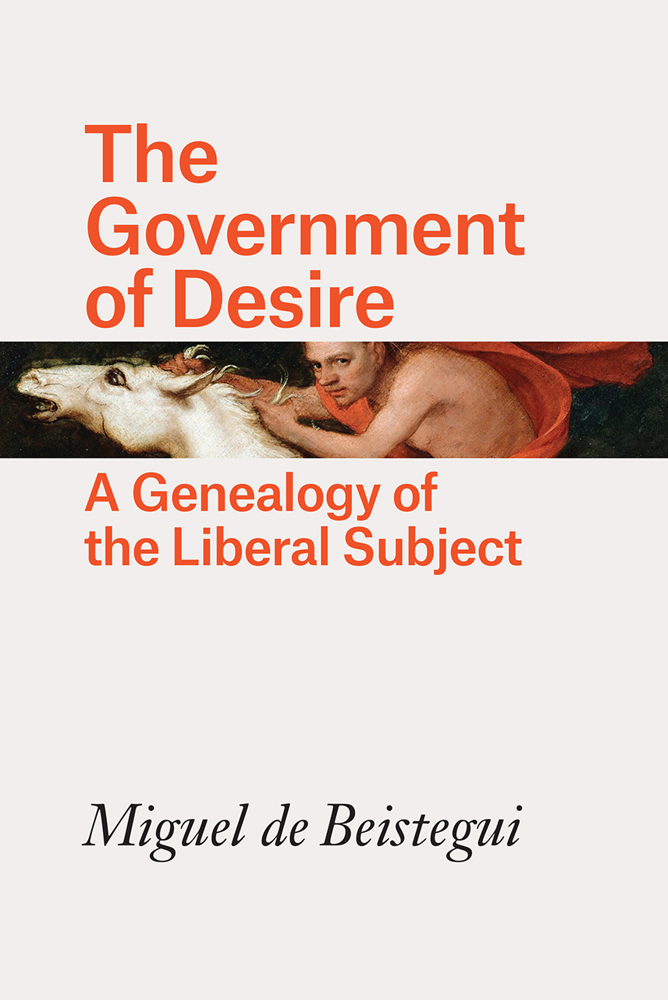
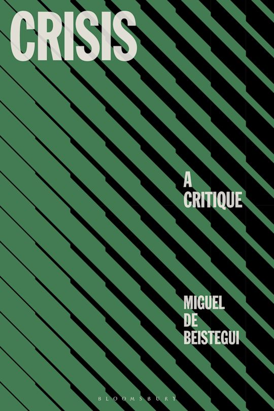
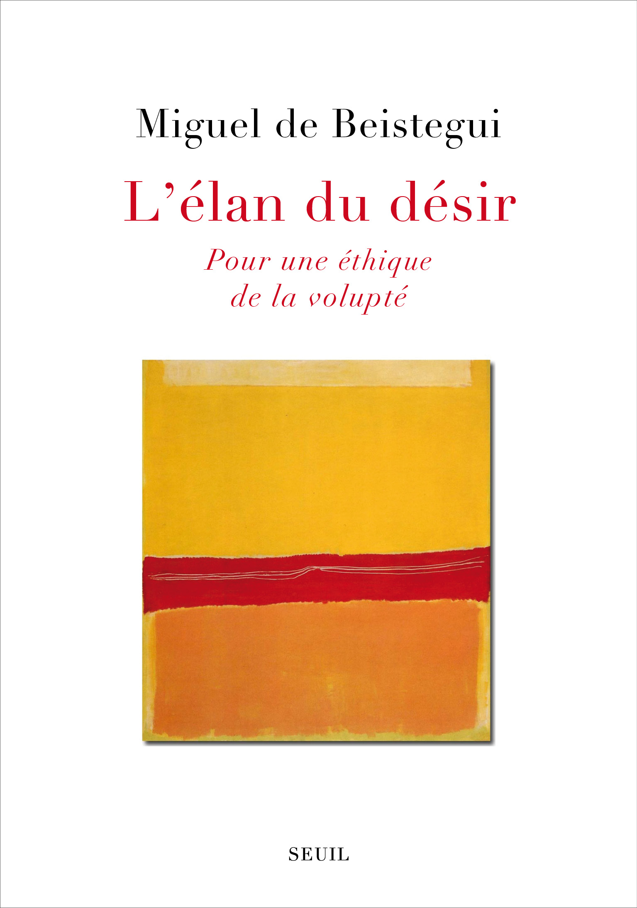
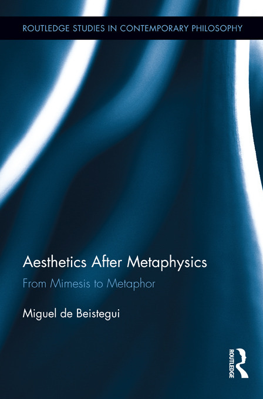

About me
I am a philosopher working at the intersections of ontology, political philosophy, aesthetics, and literature. My research has taken the form of monographs on Heidegger, Deleuze, Proust, Chillida, and Lacan—figures who, each in their own way, have shaped my thinking about difference, desire, time, and form.
Before joining Universitat Pompeu Fabra in Barcelona as an ICREA Research Professor, I taught for over twenty-five years as Professor of Philosophy at the University of Warwick (UK). Along the way, I held visiting professorships in Milan, Moscow, New York, Boston, and Venice. My philosophical education unfolded across several intellectual traditions and contexts: France (BA and MA, Paris I–Sorbonne), the United States (PhD, Loyola University Chicago), and Germany (postdoctoral research at the Hegel-Archiv in Bochum). This geographical and intellectual itinerancy has profoundly shaped my approach to philosophy.
Between 2007 and 2019, I was the recipient of several competitive research grants as Principal Investigator. I am currently co-PI on a project exploring the intersection of literature and political theory through utopian and dystopian narratives in the work of Margaret Atwood, Kazuo Ishiguro, and Michel Houellebecq. I am also the co-founder and co-coordinator of the Barcelona Network for Critical Thought and Social Research (BCNCT).
Access my Complete Academic CV here: https://www.icrea.cat/cvs/28641/miguel-beistegui/

A Brief Philosophical Autobiography

Phenomenological Beginnings
My philosophical roots lie in phenomenology, more precisely in Heideggerian ontology. My first three books were devoted to Heidegger and to what I take to be philosophy’s most fundamental problem: the ontological difference. At stake here is the relation between being and time. What is cannot be reduced to what is merely actual or present; time cannot be understood as a simple succession of instants. Likewise, identity does not generate difference; it is difference that produces identity.

Beyond Heidegger: Science and Ontology
Yet two problems eventually led me to move away from Heidegger’s framework.
The first concerns the relation between ontology and contemporary science —quantum mechanics, thermodynamics, non-linear dynamics, and biology. These domains, in my view, cannot be reduced to Heidegger’s account of modern science as an effect of Technology understood as the final stage of Western metaphysics. Not all science is subsumed under this logic. The challenge, then, became how to construct an ontology capable of responding to, and incorporating, contemporary scientific thought.

This question led me to Gilles Deleuze. I read Difference and Repetition (1968) as a late-twentieth-century rewriting of Being and Time (1927), and of the ontological difference itself. This engagement culminated in Truth and Genesis (2004), my fourth book, and has since continued through further books, articles, and lectures on Deleuze.
History, Critique, and the Present
The second problem concerns the relation between ontology and history. Heidegger’s conception of Western history as a unified narrative of the “forgetting of Being” strikes me as both too general—insensitive to ruptures and singular events—and too directional, presupposing an essentially linear orientation of history. This led me to shift away from phenomenology understood as the description of phenomena in their givenness, and toward critique.
Following Foucault, I came to think philosophy as a critical ontology of ourselves and of our present. From this perspective, philosophical history is better pursued through archaeology and genealogy than through grand narratives.

Critique in Times of Crisis
This critical turn was also prompted—and intensified—by contemporary events: the financial crisis of 2008, the ongoing ecological crisis, and the steady expansion of states of exception within constitutional democracies. My trilogy on desire draws on the Foucauldian toolbox to develop a critical history of liberalism and neoliberalism as technologies of government grounded in norms of interest, self-interest, and utility.

My book Crisis: A Critique (2026) distinguishes between different regimes of crisis in order to address their specific urgency and the kinds of responses they demand.
But critique, as I argue in Thought Under Threat: On Spite, Superstition, and Stupidity (2021), must not be directed only at historical situations or political formations. It must also be turned inward, as a kind of philosophical clinic that diagnoses the vices of thought—those habits and tendencies that undermine our capacity to think clearly and to govern ourselves peacefully. Such noetic vices, I suggest, are not merely tolerated but often encouraged in our dark times.
Desire and the Human Condition

The third and final volume of my trilogy on desire, L’Élan du désir. Pour une éthique de la volupté (2021), returns to desire as an irreducible ontological condition. Desire is the way in which we experience ourselves as never fully identical with ourselves or with the world. This incompleteness, this constitutive uneasiness, is not a defect to be overcome but the source of curiosity, wonder, creativity, and joy. It is something to be affirmed.
Literature, Art, and Metaphor
Literature and art have played a decisive role in shaping this philosophical trajectory. If “difference” names the central ontological concept of my work, and “desire” its ethical core, then “metaphor” is the aesthetic concept that translates the ontological difference into experience.
Metaphor allows us to connect objects, moments, places, and experiences that are ordinarily held apart —even opposed— in a way that is not less real, but more so. I develop this claim in Aesthetics After Metaphysics: From Mimesis to Metaphor (2012) and in my work on Proust, Jouissance de Proust: pour une esthétique de la métaphore (2007).
Literature—tragedy, fiction, poetry—also plays a central role in my analyses of crisis and noetic vices. My book on the sculptor Eduardo Chillida (2011), finally, is an homage to his poetics of space and the elements, and to the Basque soul that speaks through his work.
In short, my philosophical project seeks to articulate a double, critical ontology: an ontology of nature, and an ontology of ourselves and of our present.
